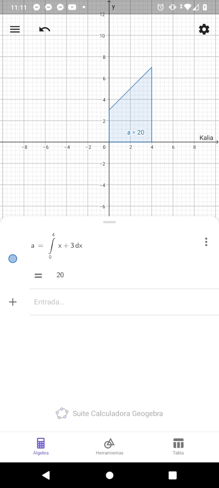
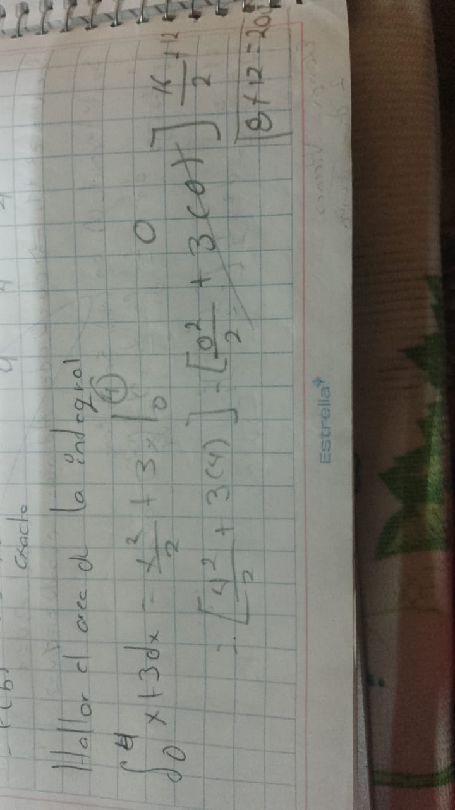

Introduccion
El Cálculo Integral, junto con el Cálculo Diferencial, son las dos áreas básicas de una rama de la matemática llamada análisis matemático. En general, el Cálculo Diferencial se introduce primero, y después la integración se interpreta como un proceso "inverso" de la derivación. Esta tradición se basa principalmente en las aportaciones de Newton, quien destaca en sus tratados dos problemas: El objeto del primero es determinar la ”fluxión” de una magnitud dada, o más general, la relación entre fluxiones, siempre que la relación de ”fluents” esté dada. El término ”fluent” significa magnitud ”fluente” o cambiante, y ”fluxión” es rapidez de la magnitud fluente, es decir, su razón de cambio. Newton delinea, con este su primer problema, lo que representa actualmente el Cálculo Diferencial.
¿Como impacto el aprender calculo integral?
Al principio me costo entenderle pero con cada paso y explicacion del tema le fui entendiendo un poco me hago bolas pero hago el esfuerzo de poder hacer mis actividades
Ahorro de energia
Actualmente el hombre, en promedio, consume entre 8 a 10 veces más energía que su antecesor de hace 60.000 años. La dependencia que tenemos con algunos de estos combustibles fósiles es notable, el consumo de petróleo es de 7 veces más actualmente que hace 50 años.
 